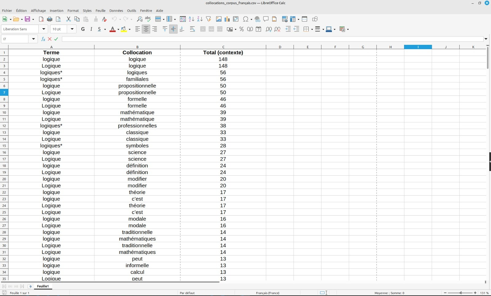

« La logique est la science qui détermine les règles que doit suivre l’esprit pour arriver à la vérité. »
— Aristote, Organon
Depuis les prémices de la pensée humaine, la logique a fasciné les philosophes et les scientifiques. Instrument d’analyse, outil de persuasion ou cadre pour structurer la pensée, la logique traverse les époques et les disciplines, des syllogismes d’Aristote à la logique mathématique de Leibniz, jusqu'aux algorithmes modernes de l’intelligence artificielle. Mais comment ce concept universel se manifeste-t-il dans différentes langues et cultures ? Cet article se penche sur l’utilisation du terme "logique" dans deux corpus contrastés : l’arabe et le français, pour explorer ses usages, ses contextes et son rôle dans le raisonnement humain.
Le terme "منطق" manṭiq et ses flexions est recensé 157 fois, principalement dans les contextes suivants :
Les expressions associées révèlent des thématiques variées :
Le mot "logique" se combine souvent avec des termes spécifiques :
L’étude des occurrences de "logique" et "منطق" montre que ce concept est à la fois ancré dans les traditions culturelles et adaptable aux nouvelles disciplines. Dans les corpus arabes, il sert à relier des idées philosophiques, sociales et technologiques, tandis que dans les textes français, il structure des raisonnements académiques complexes.
La logique reste une passerelle universelle pour comprendre le monde, reliant les langues, les cultures et les disciplines.
À l’ère de l’intelligence artificielle, où les algorithmes reposent sur des principes logiques, il est crucial d’explorer comment la logique s’intègre dans d’autres langues et contextes culturels. Une comparaison avec des corpus en anglais, chinois ou japonais pourrait offrir des perspectives fascinantes. Enfin, relier la logique aux neurosciences ou à la linguistique computationnelle permettrait d'approfondir notre compréhension de la manière dont les humains structurent leur pensée et leur langage.
Ainsi, la logique, en tant qu’art et science, continue d’éclairer les chemins de l’innovation et de la réflexion critique.
Pour aller plus loin explorez nos analyses linguistiques approfondies du mot "Logique" dans différentes langues.
Accédez aux analyses interactives avec Voyant Tools :
